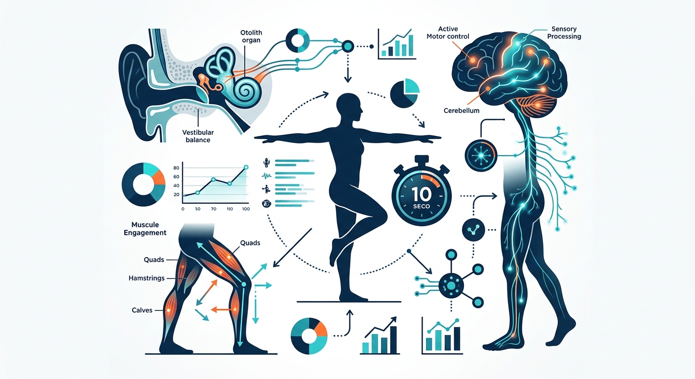

The 10-Second Test: How a Simple Balance Check Unlocks Deep Secrets of Human Longevity

Imagine a clinical diagnostic that requires no blood draw, no genome sequencing, and no expensive imaging—just a stopwatch and a single foot lifted off the ground. In an era where longevity science is dominated by hyper-complex multi-omic clocks, a deceptively simple physical challenge is emerging as a remarkably potent indicator of human vitality: the 10-second one-legged stance. Balance is not merely an athletic skill; it is a real-time symphony of biological integration. Maintaining equilibrium demands continuous, high-speed communication between central cognitive circuits, peripheral sensory nerves, vascular networks, and deep skeletal muscle. When that system stumbles, it signals deep-seated physiological decay far earlier than traditional vital signs.
In a landmark prospective cohort study following 1,702 individuals aged 51 to 75 over a median of seven years, researchers uncovered a striking divergence in human survival based on this single physical act. Overall, roughly one in five participants failed the 10-second balance test at baseline. Over the follow-up period, those unable to complete the stance suffered a mortality rate of 17.5%, compared to just 4.6% among those who passed. Even after rigorously adjusting for age, sex, body mass index, and major pre-existing conditions like heart disease, diabetes, and dyslipidemia, failure on the 10-second test was linked to an 84% increase in all-cause mortality risk over the subsequent decade.
Why does the inability to balance on one foot carry such an ominous prognostic signal? The answer lies in what postural control represents at a cellular and systemic level. Human balance acts as a functional stress test for biological reserve. A failure to hold position reflects cumulative microvascular damage, early neurodegenerative changes, and sarcopenia—the progressive loss of muscle mass and quality driven by mitochondrial dysfunction and chronic, low-grade inflammation. When microvascular blood flow wanes or motor unit recruitment degrades, the body loses its capacity for fine-grained neuromuscular adjustments, offering a clear window into accelerated systemic aging.
For biotech investors and drug developers, this functional metric holds major implications. While molecular epigenetic clocks provide mechanistic depth, clinical trials for anti-aging interventions desperately need functional endpoints that reflect whole-organism resilience. Incorporating standardized balance metrics into clinical protocols could accelerate how we evaluate longevity therapeutics, providing an objective, rapid, and cost-effective functional readout to determine whether candidate compounds are truly restoring vitality in aging human populations.
Yet, despite these compelling findings, a critical eye is required before crowning the 10-second stance as the ultimate longevity endpoint. The study relies entirely on observational data from a single cohort, meaning it establishes a strong correlation rather than direct causation; simply training yourself to stand on one foot every morning will not magically reverse underlying cardiovascular or neurodegenerative disease. Furthermore, the study could not fully control for unmeasured variables such as recent orthopedic injuries, specific exercise habits, or subtle fall histories that might transiently degrade balance without indicating systemic decline. Translating this functional signal into a reliable surrogate endpoint for clinical trials will require prospective intervention studies and rigorous standardization across diverse global cohorts.
Insights from Longevity KG: The loss of postural stability captured by the 10-second balance test directly reflects the systemic burden of Chronic Diseases and Cellular Exhaustion across neuromuscular networks. As cellular degradation accumulates, sensorimotor integration breaks down. Future therapeutic strategies—ranging from Metabolic Optimizer protocols that restore mitochondrial resilience to Senolytic interventions and Cellular Rejuvenation Therapy aimed at clearing damaged tissue—could potentially be benchmarked by their ability to reverse functional decline and restore fundamental balance metrics in aging individuals.
Sources & Citations:
Primary Source: Successful 10-second one-legged stance performance predicts survival in middle-aged and older individuals - PubMed (Web Source)
- Araujo, C. G., de Souza e Silva, C. G., Laukkanen, J. A., et al. (2022). Successful 10-second one-legged stance performance predicts survival in middle-aged and older individuals. British Journal of Sports Medicine, 56(17), 975–980. https://pubmed.ncbi.nlm.nih.gov/35728834/